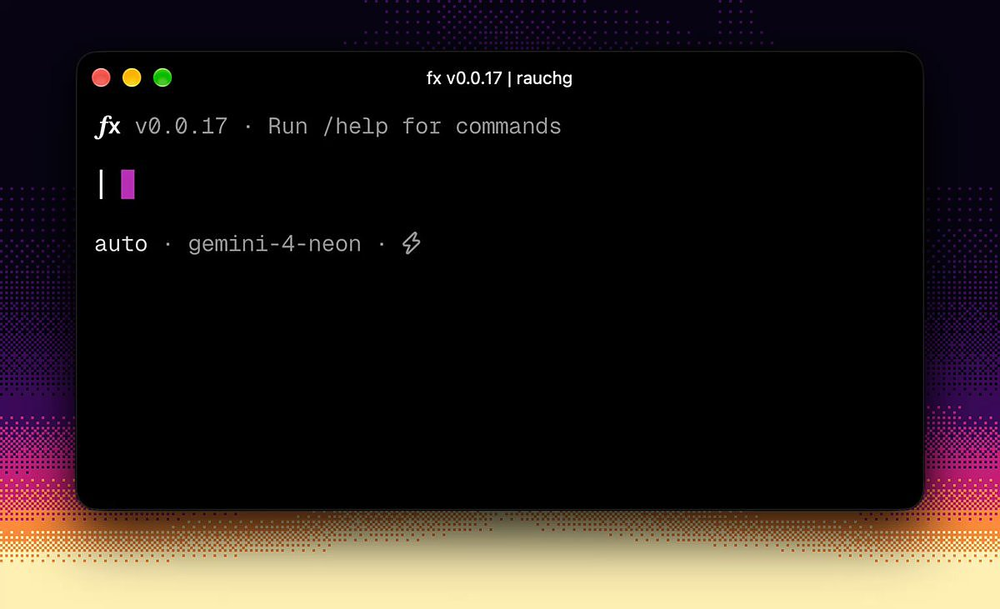

AI 日报 · 11月26日
通用模型探索蛋白质设计，代理工具走向可组合
OpenAI 报告通用模型的蛋白质设计实验；Builder 讨论多代理协作、可嵌入内核与维护成本，GitHub 上榜项目聚焦技能和命令行接口。
蛋白质设计
代理协作
开源技能
5
Builder 动态
3
上榜仓库
1
官方研究
1
深度对话
今日要点
深度对话
黄仁勋回归后的 AI 地缘政治讨论
Unsupervised Learning 第 98 期邀请 ChinaTalk 的 Jordan Schneider，讨论黄仁勋重返英伟达之后的政策与产业影响。节目中的政治判断属于嘉宾观点。
讨论重点
节目围绕美国与中国的 AI 竞争、芯片销售政策和市场反应展开；政治后续仍有不确定性。
Builder 动态
代理协作、接口与维护
Peter Yang｜用 Gemini 与 Antigravity 协作
分享一门免费视频课程，介绍 Orchestrator、/swarm 等多代理功能；他称一次曾并行运行 42 个代理，这是个人使用经历。
Amjad Masad｜代理形态推动算力需求
认为从补全、对话到长任务和代理群，每次工作框架变化都可能释放更多单人计算需求；这是其趋势判断。
Guillermo Rauch｜强调可嵌入的编码代理内核
Vercel CEO 称其 CLI 是 libfx 的薄封装，目标是让编码代理内核能够嵌入浏览器、服务器和桌面端等不同界面。

Aaron Levie｜观察团队间 AI 采用差异
Box CEO 认为模型与代理框架进步可能让同一家公司的不同团队产生明显产出差距；“10 倍”是其观点，并非普遍实测结论。
Peter Steinberger｜反思开源代理的维护成本
称 OpenClaw 正专注于速度、可靠性等基础工作，也坦言持续响应用户问题给开源维护带来压力。
GitHub Trending
技能包与代理接口
11 月 26 日 GitHub Trending 快照；星标及 Fork 数来自同日仓库页面。
今日思考
从实验走到可复用流程
蛋白质研究展示通用模型的跨领域潜力，代理工具展示可组合的工作界面。两者都需要明确评价边界：前者看实验验证，后者看任务成功率、权限和维护成本。
今天可做
挑选一项真实任务，记录代理完成率、人工修正次数和失败后的恢复方式。
参考来源